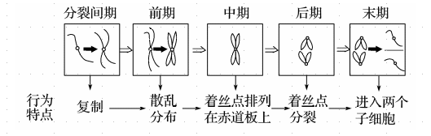
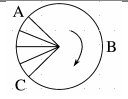
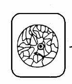
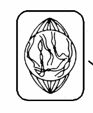
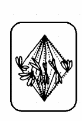
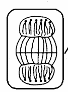
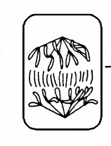
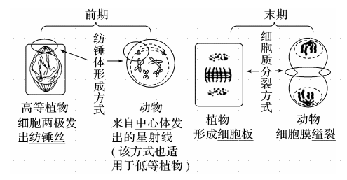

生物步步高11.细胞的增殖
同步
生物体生长的原因是？
细胞的生长和细胞的分裂。
-
模拟实验——细胞大小与物质运输的关系
-
实验原理：
-
用不同大小的琼脂块模拟不同大小的细胞。
-
用 在琼脂块中扩散的体积与整个琼脂块的比值模拟细胞的物质运输的效率。
-
-
实验结果：
-
相同时间内， 在每一琼脂块内扩散的深度基本相同，说明 在每一琼脂块内扩散的速率相同。
-
在琼脂块中扩散的体积与整个琼脂块的体积之比随着琼脂块增大而减小，说明琼脂块体积越大，物质运输效率越低。
-
-
细胞不能无限长大的原因？ 相对表面积制约：体积越大，相对表面积越小，细胞的物质运输效率越低。 核质比制约：细胞核中 DNA 有限，能控制的细胞质范围有限。
细胞体积是不是越小越好？为什么？
不是。因为遗传物质、酶和各种细胞器都需要一定的容纳空间。
-
细胞增殖
-
概念：细胞以分裂的方式进行增殖，包括物质准备和细胞分裂整个连续的过程。
-
方式：
-
真核细胞：无丝分裂、有丝分裂和减数分裂；
-
原核细胞：二分裂。
-
-
意义：是重要的细胞生命活动，是生物体生长、发育、繁殖、遗传的基础。
-
-
细胞周期
-
条件：连续进行有丝分裂的细胞才有细胞周期。
-
概念：连续分裂的细胞，从一次分裂完成时开始，到下一次分裂完成时为止，为一个细胞周期。
-
特点：
-
一个细胞周期包括两个阶段：分裂间期和分裂期。
-
分裂间期完成 DNA 分子的复制和有关蛋白质的合成，为分裂期进行活跃的物质准备，同时细胞有适度的生长。
-
-
分裂间期的特点是？ 完成 DNA 分子的复制和有关蛋白质的合成，为分裂期进行活跃的物质准备，同时细胞有适度的生长。
判断：细胞越小，相对表面积也越大，这样有利于提高物质运输速率。 错误，运输速率相等，效率高。
判断：同一生物体器官的大小主要取决于细胞数量的多少。
正确。
判断：任何具有分裂能力的细胞都具有细胞周期。
错误。减数分裂和无丝分裂没有细胞周期，高度分化的成熟细胞也没有细胞周期。
判断：洋葱的表皮细胞比分生区细胞的增殖周期长。
错误。洋葱表皮细胞不分裂，没有增殖周期。
显微镜下观察某植物组织的有丝分裂时，大部分细胞处于分裂间期，原因？ 细胞周期中，分裂间期所占的时间长，因此观察细胞所处时期时，大部分细胞都处于分裂间期。
-
分裂间期的物质变化
-
G1 期：又称 DNA 合成前期，主要进行 RNA 和有关蛋白质(如 DNA 聚合酶等)的合成，为 S 期 DNA 的复制做准备。
-
S 期：又称 DNA 合成期，主要进行 DNA 的复制。
-
G2 期：又称 DNA 合成后期，发生的是有丝分裂所必需的一些蛋白质的合成。
-
显微镜下观察某植物组织的有丝分裂时，大部分细胞处于分裂间期，原因？
细胞分裂后产生子细胞的三种去向？ 持续分裂：始终处于细胞周期中。 暂不分裂：暂时脱离细胞周期，但仍具有分裂能力，在一定条件下可回到细胞周期中。 永不分裂：永远脱离细胞周期，处于分化状态直到死亡。
肌纤维细胞分裂后产生子细胞的去向？ 永不分裂。
神经细胞分裂后产生子细胞的去向？ 永不分裂。
浆细胞分裂后产生子细胞的去向？ 永不分裂。
叶肉细胞分裂后产生子细胞的去向？ 永不分裂。
洋葱鳞片叶表皮细胞分裂后产生子细胞的去向？ 永不分裂。
根尖成熟区细胞分裂后产生子细胞的去向？ 永不分裂。
根尖分生区细胞分裂后产生子细胞的去向？ 持续分裂。
茎形成层细胞分裂后产生子细胞的去向？ 持续分裂。
卵裂期细胞分裂后产生子细胞的去向？ 持续分裂。
部分造血干细胞分裂后产生子细胞的去向？ 持续分裂。
芽生长点细胞分裂后产生子细胞的去向？ 持续分裂。
肝脏细胞分裂后产生子细胞的去向？ 暂不分裂。
T 细胞分裂后产生子细胞的去向？ 暂不分裂。
B 细胞分裂后产生子细胞的去向？ 暂不分裂。
记忆细胞分裂后产生子细胞的去向？ 暂不分裂。
蛙的红细胞进行无丝分裂增殖。
判断：红细胞通过无丝分裂增殖。 错误。 哺乳动物成熟红细胞通过造血干细胞分裂产生的细胞分化发育而来。 非哺乳动物，如蛙的红细胞无丝分裂。
减数分裂有细胞周期吗？ 没有。
判断：无丝分裂无纺锤体和染色体出现，也没有核膜、核仁的周期性消失与重建，不发生 DNA 复制。 错误，发生 DNA 复制。
判断：细胞在分裂期进行细胞周期相关基因的转录。 错误。 分裂期染色体高度螺旋化，DNA 不易解旋，不能进行转录。
-
与细胞周期相联系的知识：
-
基因突变：在细胞分裂间期的 S 期，DNA 复制时容易受到内外因素的干扰而发生差错，即发生基因突变。
-
染色体变异：在细胞分裂期的前期，秋水仙素或低温都可抑制纺锤体的形成，引起细胞内染色体数目加倍，继续进行有丝分裂，可出现多倍体植株。
-
细胞癌变：用药物作用于癌细胞，在分裂间期，DNA 不能复制，可抑制癌细胞的增殖。
-
免疫：在淋巴因子的作用下，被抗原刺激后的 B 细胞将进入细胞周期迅速分裂，使细胞周期缩短。
-
有丝分裂间期的主要特点是？
DNA 分子的复制，有关蛋白质的合成，细胞适度生长。
有丝分裂前期的主要特点是？
出现染色体和纺锤体，核膜、核仁消失，且染色体散乱排列。
有丝分裂中期的主要特点是？
染色体的着丝点排列在赤道板上。
有丝分裂后期的主要特点是？
着丝点分裂，子染色体被拉向细胞的两极。
有丝分裂末期的主要特点是？
染色体变成染色质丝，纺锤体消失，核膜、核仁重新出现，出现细胞板。
分裂间期核 DNA 存在于染色质丝中，分裂期染色质丝螺旋缠绕成棒状的染色体，这种变化有什么意义？
分裂间期核 DNA 存在于染色质丝中，有利于解旋后进行 DNA 的复制和转录。
分裂期染色质丝螺旋缠绕成棒状的染色体，有利于遗传物质的平均分配。
有丝分裂的丝：对于高等植物，丝指纺锤丝；对于动物和低等植物，丝指星射线。它的作用是牵引染色体的运动。
| 有丝分裂 | 生物类型 | 作用时期 | 生理作用 |
|---|---|---|---|
| 核糖体 | 动物 植物 | 主要是间期 | 合成相关蛋白质 |
| 线粒体 | 动物 植物 | 整个细胞周期 | 提供能量 |
| 高尔基体 | 植物 | 末期 | 与细胞壁(板)的形成有关 |
| 中心体 | 动物、低等植物 | 前期 | 与纺锤体的形成有关 |
-
有丝分裂中细胞结构或物质的周期性变化
-

-
当有染色单体(间期的 G2 期、前期、中期)时，染色体数 ∶ 染色单体数 ∶ 核 DNA 数=1∶2∶2
-
当无染色单体(间期的 G1 期、后期、末期)时，染色体数 ∶ 核 DNA 数=1∶1
-
| 有丝分裂 | 间期 | 前期 | 中期 | 后期 | 末期 |
|---|---|---|---|---|---|
| 核 DNA | 2n->4n | [1]4n | [2]4n | [3]4n | [4]4n->2n |
| 染色体 | 2n | [1]2n | [2]2n | [3]4n | [4]4n->2n |
| 染色单体 | 0->4n | [1]4n | [2]4n | [3]0 | [4]0 |
有丝分裂的意义？ 将亲代细胞的染色体经过复制(实质为 DNA 的复制)之后，精确地平均分配到两个子细胞中，保持了细胞的亲代和子代之间遗传性状的稳定性。
判断：间期细胞核中的主要变化是 DNA 分子的复制和有关蛋白质的合成。
错误。细胞核中没有有关蛋白质的合成。
判断：赤道板不是真实存在的细胞结构，观察不到；细胞板是由高尔基体形成的细胞结构，可以观察到。 正确。
判断：有丝分裂中染色体数目加倍和核 DNA 数目加倍发生在同一时期。 错误。 染色体数目加倍：后期着丝点分裂。 DNA 数目加倍：间期 DNA 复制。
判断：在一个细胞周期中，DNA 的复制和中心粒的倍增可能发生在同一时期。 正确。
判断：除中心体之外的细胞器在子细胞中的分配是随机的。 正确。
细胞分裂期蛋白质合成的很少，原因是？
DNA 高度螺旋化，难以解旋，无法正常转录。
有丝分裂后期着丝点的分裂是不是纺锤丝牵引的结果？如何验证你的结论？
不是。秋水仙素处理后，染色体加倍，这说明纺锤体无法形成的时候着丝点一样可以分裂。
-
有丝分裂过程中的四种加倍
-
核 DNA：间期因「DNA 复制」而加倍。
-
染色体：后期因「着丝点分裂」而加倍。
-
中心体：间期因中心粒复制而加倍。
-
细胞核：末期因新核膜已经形成，细胞质尚未分裂而暂时加倍。
-
判断：染色体复制在光学显微镜下难以观察到。 正确。
-
观察根尖分生组织细胞的有丝分裂实验原理
-
高等植物的分生组织细胞有丝分裂较旺盛。
-
细胞核内的染色体(质)易被碱性染料(龙胆紫溶液或醋酸洋红液) 染成深色。
-
由于各个细胞的分裂是独立进行的，在同一分生组织中可以通过高倍显微镜观察细胞内染色体的存在状态，判断处于不同分裂时期的细胞。
-
-
观察根尖分生区组织细胞有丝分裂实验步骤
-
洋葱根尖的培养：实验前 3～4 d，将洋葱放在瓶内装满清水的广口瓶上，底部接触到瓶内的水面，置于温暖处培养，待根长至约 5 cm。
-
解离
-
剪取根尖 2-3mm
-
解离液：质量分数为 15% 盐酸和体积分数为 95% 的酒精混合液(1:1)
-
目的：使组织中的细胞相互分离开来
-
时间：3-5min
-
-
漂洗
-
漂洗液：清水
-
目的
-
防止解离过度
-
便于染色
-
-
时间：约 10min
-
-
染色
-
染液：质量浓度为 0.01g/mL 或 0.02g/mL 的龙胆紫溶液或醋酸洋红液溶液。
-
目的：使染色体着色，便于观察。
-
时间：3-5min
-
-
制片
-
用镊子尖把根尖弄碎，盖上盖玻片，附加一片载玻片，用拇指轻压载玻片。
-
目的：使细胞分散开来，有利于观察。
-
-
观察
-
低倍镜观察：根据根尖特点找到分生区细胞：细胞呈正方形，排列紧密。
-
高倍镜观察：先找分裂中期的细胞，再找前期、后期、末期的细胞，最后观察分裂间期的细胞
-
-
绘图：绘出植物细胞有丝分裂中期简图。
-
-
观察根尖分生组织细胞的有丝分裂实验注意事项：
-
根尖中只有分生区细胞才可以进行分裂，伸长区和成熟区细胞不能分裂。
-
不能观察一个细胞的连续分裂过程，因为解离时细胞已死亡，可以寻找处于不同时期的细胞，连起来体现出细胞分裂的连续过程。
-
“解离 → 漂洗 → 染色 → 制片”的步骤顺序不能颠倒、不能缺失，否则不易观察到预期现象。
-
观察根尖分生组织细胞的有丝分裂实验中，解离时间太短的影响？ 细胞间质未被完全溶解，压片时细胞不易分散。
观察根尖分生组织细胞的有丝分裂实验中，解离时间太长的影响？ 导致细胞解离过度、根尖过于酥软，影响染色。
观察根尖分生组织细胞的有丝分裂实验中，漂洗时间适宜的目的？ 洗去多余的盐酸，防止解离过度而影响染色。
观察根尖分生组织细胞的有丝分裂实验中，染色时间太短的影响？ 染色体或染色质不能完全着色。
观察根尖分生组织细胞的有丝分裂实验中，压片力度过轻的影响？ 细胞未分散开。
观察根尖分生组织细胞的有丝分裂实验中，压片力度过重的影响？ 将组织压烂。
观察根尖分生组织细胞的有丝分裂实验步骤？ 解离、漂洗、染色、制片。
观察根尖分生组织细胞的有丝分裂实验中，染色后需要用清水漂洗吗？ 不需要，直接制片观察。
判断：伸长区细胞已失去分裂能力，染色体呈染色质状态，观察不到染色体。 正确。
连续分裂的细胞，从一次分裂完成时开始，到[1]下一次分裂完成时为止，为一个细胞周期。
判断：无丝分裂过程中不出现纺锤丝和染色体的变化，但是也有 DNA 分子的复制和分配。 正确。
细胞表面积与体积的关系限制了细胞的长大。
细胞在分裂之前，必须进行一定的物质准备。细胞增殖包括物质准备和[1]细胞分裂整个连续的过程。
判断：核仁是合成 rRNA 和核糖体蛋白的场所。 错误。 核仁是合成 rRNA 的场所，但核糖体蛋白在核糖体上合成。
有丝分裂，纺锤丝出现在什么时期？ 前期。
判断：用蛋白质合成抑制剂处理后，不影响 S 期 DNA 复制过程。 错误。
判断：用抑制纺锤体形成的药物处理后，不影响染色单体的分开。 正确。
有丝分裂中，染色体复制发生在什么时候？ 分裂间期。
判断：细胞板的形成与囊泡有关。 正确。细胞板是植物细胞分裂末期,在隔膜形成体的中央生成的囊泡融合成的薄膜结构,是新细胞壁的前体。
G1 期蛋白质合成旺盛，合成的蛋白质可为 S 期准备什么？ DNA 复制所需的酶。
核 DNA 复制发生在 S 期，判断依据是？ S 期以后一个着丝点上附着两条姐妹染色单体。
分生区细胞的特点是？ 细胞呈正方形、排列紧密。
筛选鉴定多倍体时，经过解离漂洗染色制片，观察分生区细胞，若装片中细胞均多层重叠，原因可能是？ 解离、压片不充分。
判断：动物细胞在分裂后期，分离的染色体被纺锤丝牵引移向细胞两极。 正确。
判断：植物细胞在分裂末期，两个新细胞间的赤道板上会出现许多囊泡。 正确，形成细胞板。
! !在图中，表示一个细胞周期。 A->B->C->A
! !这是有丝分裂的哪个时期？ 间期。
! !这是有丝分裂的哪个时期？ 前期。
! !这是有丝分裂的哪个时期？ 中期。
! !这是有丝分裂的哪个时期？ 末期。
! !这是有丝分裂的哪个时期？ 后期。
